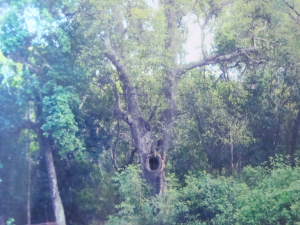

Tham quan di tích Lịch sử Phủ đường Tam Kỳ
Di tích lịch sử Phủ đường Tam Kỳ là một trong những di tích lịch sử ở Quảng Nam nổi tiếng thu hút du khách đi du lịch Quảng Nam đến tham quan và tìm hiểu lịch sử khu di tích này. Sau khi xâm lược nước ta (1858) đến hiệp ước Patơnôt (1884), thực dân Pháp đã chính thức đặt nền móng Bảo hộ với chính sách chia để trị. Theo lịch sử vào năm Thành Thái thứ 18 (1906) người Pháp tham mưu cho Nam Triều đổi tên huyện Hà Đông thành Phủ đường Tam Kỳ và Phủ lỵ được dời từ làng Chiên Đàn (huyện Phú Ninh) về thôn An Hoà, xã Tam Kỳ nay thuộc UBND phường An Mỹ. Di tích lịch sử Phủ đường Tam Kỳ ở Quảng nam có địa thế thuận lợi gần đường quốc lộ, ga xe lửa, đồn Đại Lý, nhà dây thép đồn Bang Tá, kho Bạc... Lúc bấy giờ Phủ Tam Kỳ gồm 7 tổng: tổng An Hoà, Đức Hoà, Đức Tân, Phú Quí, Chiên Đàn, Vinh Quí và Phước Lợi. Trải qua các đời tri phủ Tạ Thúc Xuyên, Ưng Uý, Lê Trung Khoản, Phan Trúc Ngô, Hoàng Yến, Trần Đạo Tề, Nguyễn Hữu Tựu, Các Văn Huý và Trần Kim Lý.Phủ đường Tam Kỳ ở Quảng Nam, nơi đây đã diễn ra 3 cuộc khởi nghĩa lớn của đất nước đó là: Cuộc biểu tình chống sưu cao thuế nặng năm 1908; Phong trào khởi nghĩa Việt Nam Quang Phục Hội (1916) và phong trào khởi nghĩa cướp chính quyền 19/8/1945.
Dấu ấn không gian nhà Việt - Vinahouse Space ở Quảng Nam
Vinahouse Space là quần thể với 18 nếp nhà cổ xưa độc đáo nhất của người Việt và 15 công trình kiến trúc được phục dựng nguyên vẹn. Đi du lịch Quảng Nam du khách không nên bỏ lỡ cơ hội tham quan không gian nhà Việt - Vinahouse Space đầy ấn tượng. Cùng Du Lịch Việt Namtìm hiểu nét đặc biệt trong di tích lịch sử ở Quảng Nam nổi tiếng này nhé. Không gian nhà Việt - Vinahouse Space tọa lạc ở xã Điện Minh, huyện Điện Bàn, nằm trên tuyến đường nối 2 di sản văn hóa thế giới Mỹ Sơn và phố Hội An (Quảng Nam). Theo kinh nghiệm du lịch Hội An du khách có thể ghé thăm Vinahouse-Space trong chuyến hành trình tour du lịch Miền Trung đến với vùng đất với nhiều di tích lịch sử nổi tiếng này. Không gian nhà Việt - Vinahouse Space có tổng cộng 18 nhà cổ độc đáo và 15 công trình kiến trúc khác được phục dựng nguyên vẹn trên diện tích đất hơn 10.000m2. Trong đó, có nhiều kiến trúc nhà cổ được sưu tầm, phục dựng như: Nhà một gian hai chái cổ lầu miền Bắc; nhà năm gian hai chái kép, tam gian tứ hạ, nhà tranh tre một gian hai chái của Quảng Nam... Ở không gian nhà Việt - Vinahouse Space có ngôi nhà tam gian tứ hạ có niên đại hơn 200 năm, với diện tích xây dựng 150m2, tỉ lệ nguyên bản 92%, ngôi nhà này được Tạp chí UNESCO xếp hạng là ngôi nhà cổ dân gian đẹp nhất và lớn nhất miền Trung và cũng là di tích lịch sử ở Quảng Nam nổi tiếng thu hút du khách ghé thăm. Để mua lại ngôi nhà này, chủ nhân của nó đã phải chi 2,4 tỉ đồng. Ngoài ra, còn có các kiến trúc nhà ba gian hai chái vỏ cua, nhà bát giác cung đình Huế, nhà tranh tre cổ, nhà bánh ú Quảng Trị, nhà rường Quảng Bình, nhà lá mái Bình Định, nhà tứ giác và lục giác miền Nam, nhà thủy đình hồ bán nguyệt Bắc Ninh… cũng đặc sắc không kém.
Chùa Cầu - Biểu tượng du lịch Hội An
Tương truyền, cả cộng đồng người Việt, người Nhật, người Hoa có chung một truyền thuyết về nguyên nhân gây ra những trận động đất. Họ cho rằng ở ngoài đại dương có một loài thuỷ quái mà người Việt gọi là con Cù, người Nhật gọi là Mamazu, người Hoa gọi là Câu Long, đầu của quỷ quái này ở Nhật Bản, đuôi của nó ở Ấn Độ và lưng của nó vắt qua khe ở Hội An mà cầu Nhật Bản bắc qua. Mỗi khi con thuỷ quái này quẫy mình thì nước Nhật bị động đất và Hội An không được yên ổn để người Nhật, người Hoa, người Việt được bình yên làm ăn buôn bán. Để khống chế con Mamazu, người Nhật đã thờ các thần Khỉ và các Thần Chó trên hai đầu cầu để “yểm” con thuỷ quái đó. Người Minh Hương lập ngôi chùa nhỏ nằm sát cây cầu cổ để thờ Bắc Đế Chân Võ gọi là chùa Cầu cũng với mục đích khống chế con Câu Long gây ra động đất.Vì thế ngôi chùa Cầu ở Hội An này được coi như là một thanh kiếm đâm xuống lưng con quái vật Mamazu, khiến nó không quẫy đuôi, gây ra những trận động đất được nữa. Năm 1653, người ta dựng thêm phần chùa, nối liền vào lan can phía Bắc, nhô ra giữa cầu, từ đó người địa phương gọi là Chùa Cầu. Năm 1719, Chúa Nguyễn Phúc Chu thăm Hội An, đặt tên cho chiếc cầu là Lai Viễn, với ý nghĩa là “bạn phương xa đến”. Theo niên đại được ghi ở xà nóc và văn bia còn lại ở đầu cầu thì chiếc cầu đã được dựng lại vào năm 1817. Ngôi chùa Cầu ở Hội An có lẽ cũng được dựng vào thời gian này. Chùa được trùng tu vào các năm 1817,1865,1915,1986.
Chùa Bà Mụ - Hội An, địa điểm hot không thể bỏ qua
Nằm trên trục đường Hai Bà Trưng, không xa chùa Cầu, đây là hạng mục cổng của một tổ hợp công trình kiến trúc văn hóa tín ngưỡng Cẩm Hà cung và Hải Bình cung, dân gian thường gọi là chùa Bà Mụ. Di tích từng giữ vai trò quan trọng trong đời sống tinh thần của cộng đồng dân cư Hội An nói chung và cộng đồng làng Minh Hương nói riêng.Chùa Bà Mụ, một ngôi chùa mà mọi cư dân Hội An đều biết, không thua gì Chùa Ông tức là Chùa thờ Quan Thánh Đế Quân, ở sát cạnh chợ Hội An hay chùa Bà tức là Chùa Ngũ Bang thờ Bà Thiên Hậu Thánh Mẫu, ngó ra con đuờng Hoàng văn Thụ, chạy thẳng ra sông Hội An. Di tích nguyên được khởi dựng vào năm 1626, Năm 1848 rồi năm 1922 di tích được trùng tu lớn và định hình với quy mô hoành tráng, từng được các nhà nghiên cứu trong và ngoài nước đánh giá là một công trình kiến trúc đẹp của Quảng Nam cùng với hai di tích khác ở Hội An là chùa Cầu và Hội quán Triều Châu.

Về thăm di tích lịch sử "Rừng cây mang tên Bác" ở Quảng Nam
Khu di tích lịch sử Rừng cây mang tên Bác là một trong những di tích lịch sử nổi tiếng ở Quảng Nam. Với địa hình tương đối bằng phẳng, lại được che chắn bới những ngọn núi thấp như: núi đất Quảng Phú, An Hà ở phía Bắc và Tây Bắc được sông Trường Giang chạy dọc vùng cồn cát ven biển Quảng Nam bao bọc ở phía Tây, phíaTây Nam cách trung tâm tỉnh lỵ Quảng Nam chỉ hơn 1 km về phía Bắc theo đường chim bay. Với địa thế và vị trí quan trọng như vậy vùng đất Tam Phú – An Phú nói chung và “Rừng Miếu” nói riêng được xem là một khu vực có tầm chiến lược quan trọng của lực lượng cách mạng trong suốt thời kỳ chống Pháp và Mỹ của dân tộc Việt Nam.Trong lịch sử hưởng ứng phong trào chống sưu thế của nhân dân Đại Lộc trong những năm đầu của thế kỉ XX, tại “Rừng Miếu” nhân dân các xã vùng Đông Tam Kỳ, Tam Phú, Tam Thanh .... đã tập trung tại đây trước khi kéo ra đường lộ hội quân với nhân dân Đại Lộc về bao vây Phủ Đường Tam Kỳ tối 30/3/1908. Sau cách mạng tháng 8/1945, khu di tích “Rừng Miếu”đã trở thành điểm sinh hoạt văn hóa, tín ngưỡng và nơi đây cũng là điểm du lịch Quảng Nam thu khách du lịch thập phương đến tham quan. Ngày 19/5/1949 nhân kỉ niệm ngày sinh của chủ tịch Hồ Chí Minh một cuộc míttinh trọng thể tại khu Rừng Miếu với trên 1000 người đến dự, tại cuộc mít tinh này Chi Uỷ, Uỷ ban hành chính kháng chiến và Mặt trận Việt Minh xã Tam Thanh đã quyết định đặt tên khu rừng Miếu là “Rừng cây mang tên Bác” người dân vẫn quen gọi là “Rừng cây Bác Hồ” đã trở thành căn cứ cách mạng của vùng Đông Tam Kỳ trong suốt hai cuộc kháng chiến chống Pháp và Mỹ.
